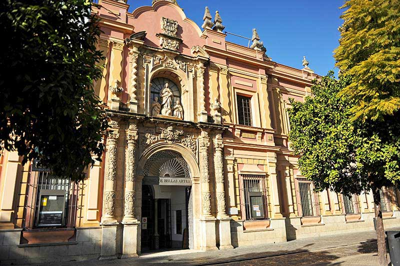
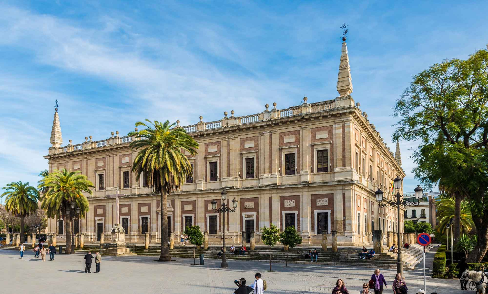
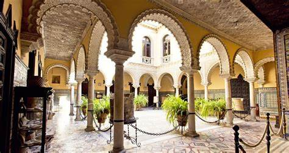
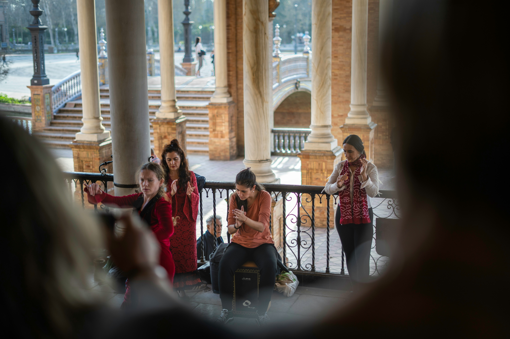
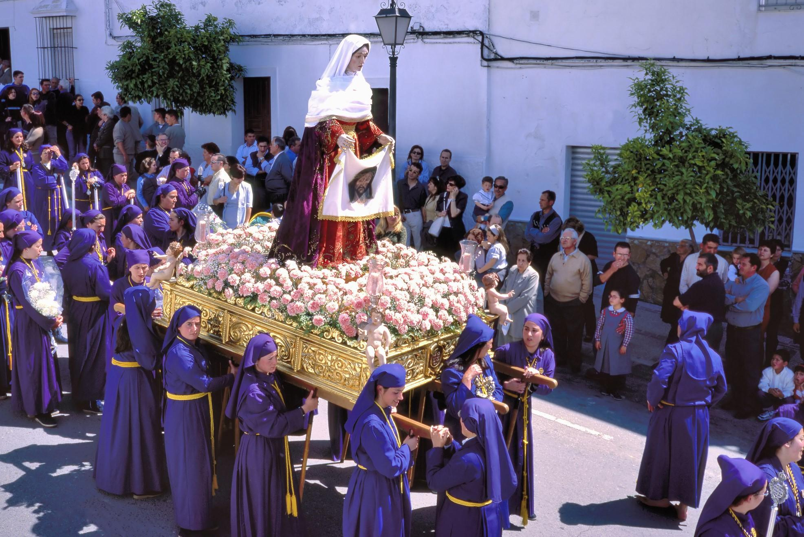
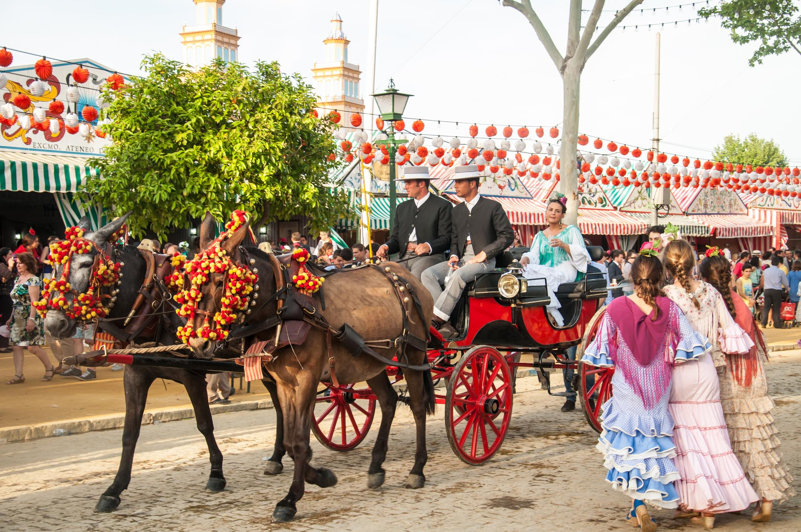

Seville's cultural tapestry weaves together Moorish influences, Christian traditions, and the passionate spirit of Andalusia. From the haunting melodies of flamenco to the architectural marvels that dot the cityscape, every corner tells a story of artistic evolution and cultural preservation.
The Soul of Seville

Museums & Galleries

Museo de Bellas Artes
The Museo de Bellas Artes de Sevilla, housed in the former Convento de la Merced, is one of Spain’s most important fine arts museums, showcasing a vast collection of Spanish paintings from the medieval period to the 20th century. It is especially renowned for its Sevillian Baroque art, featuring masterpieces by Murillo, Zurbarán, and Valdés Leal. The museum’s stunning Baroque architecture, along with its beautiful courtyards, enhances the experience for visitors. Inside, various rooms display religious paintings, sculptures, and decorative arts that reflect Andalusia’s artistic heritage. Located near the historic center of Seville, it is a must-visit destination for art lovers wanting to explore Spain’s rich artistic traditions.

Archivo General de Indias
The Archivo General de Indias, located in Seville, is a UNESCO World Heritage site that houses a vast collection of documents detailing Spain’s colonial history in the Americas. Established in 1785 by King Carlos III, it holds over 43,000 files with maps, letters, and records from the Spanish Empire, including documents signed by Columbus, Magellan, and Cortés. The building itself, a masterpiece of Spanish Renaissance architecture, was originally designed as a merchants' exchange in the 16th century. Today, it serves as an essential research center for historians studying Spain’s exploration and governance of the New World. Situated next to Seville’s Cathedral and Alcázar, it is a key cultural landmark in the city.

Palacio de la Condesa de Lebrija
The Palacio de la Condesa de Lebrija is a stunning 16th-century palace in Seville, famous for its impressive collection of Roman mosaic. The palace combines Moorish, Renaissance, and Baroque architectural styles, creating a unique and elegant atmosphere. Inside, visitors can admire antique sculptures, paintings, and luxurious furniture** collected by the Countess of Lebrija. The grand staircase and beautifully decorated courtyards showcase the artistry of **Sevillian tilework and craftsmanship. Today, the palace is a museum, offering a glimpse into Seville’s rich history and aristocratic past.
Flamenco: The Heart of Andalusia
Flamenco is the heart and soul of Seville, a passionate art form that combines singing, guitar playing, and expressive dance. Rooted in Andalusian, Romani, and Moorish influences, it tells stories of love, struggle, and triumph through powerful rhythms and movements. The city is home to legendary tablaos where visitors can witness authentic flamenco performances, filled with raw emotion and intensity. Whether in small, intimate venues or grand festivals like the Bienal de Flamenco, this tradition remains an essential part of Seville’s cultural identity.

Festivals & Celebrations
April
Semana Santa
Experience the solemnity and grandeur of Holy Week processions.
April-May
Feria de Abril
Join the city's largest festival celebrating Andalusian culture.
September
Bienal de Flamenco
Witness the world's largest flamenco festival.
Traditional Festivals

Semana Santa
Holy Week processions

Feria de Abril
Spring fair & dancing
Corpus Christi
Religious parades
Velá de Santa Ana
Triana district festival
Romería del Rocío
Religious pilgrimage
Día de Andalucía
Regional holiday
Noche de San Juan
Bonfires & celebrations